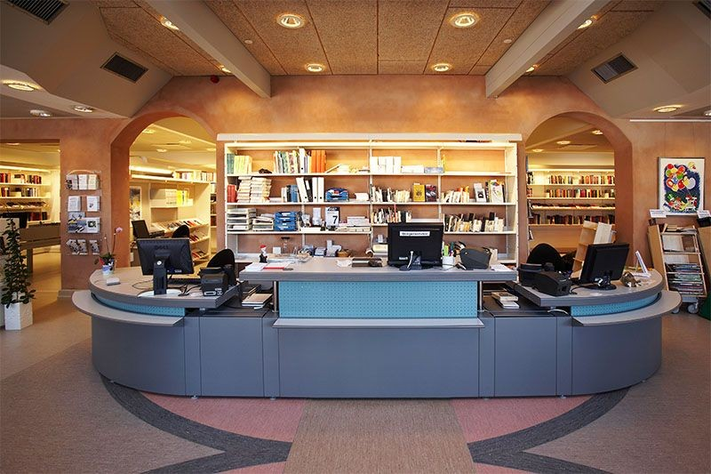
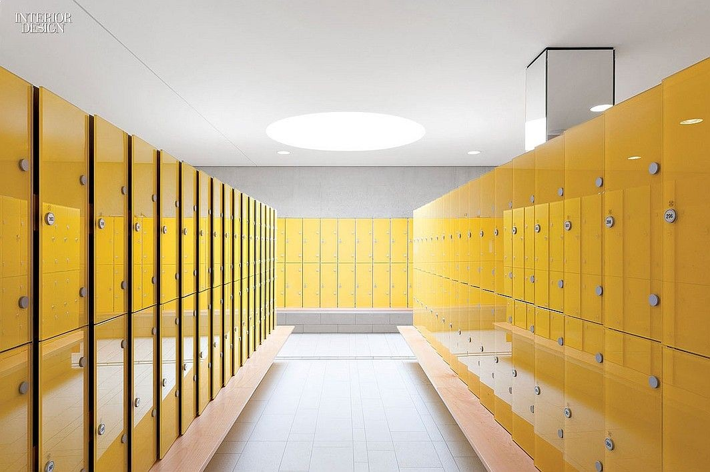
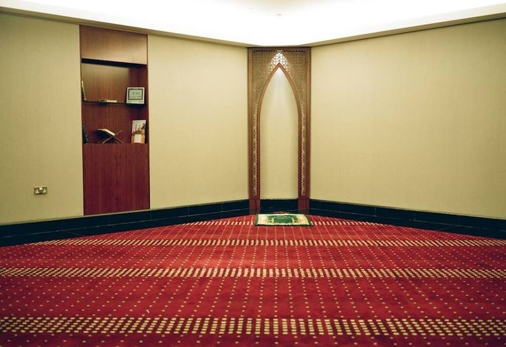

Fasilitas
Lobby

Saat pertama kali masuk perpustakan Literasi Wangsa Papat kalian akan langsung melihat ruang lobby yang dilengkapi dengan meja resepsionis yang bertujuan untuk melayani pengunjung yang bertanya mengenai seputar perpustakaan. Selain meja resepsionis, ruang lobby ini juga menjadi sarana para pengunjung perpustakaan untuk duduk menunggu sambil menonton televisi.
Locker Room

Perpustakaan Literasi Wangsa Papat menyediakan loker dengan jumlah 200 pintu. Dengan itu para pengunjung dapat menitipkan barang bawaanya diloker yang sudah disediakan perpustakaan.
Mushola

Perpustakaan Literasi Wangsa Papat menyediakan mushola bagi umat beragama islam dengan kapasitas yang cukup untuk dilakukan sholat berjamaah. Dengan adanya fasilitas ini diharapkan para pengunjung tetap tidak lupa akan kewajibannya ketika sedang mencari ilmu.
Copyright 2021 Perpustakaan Literasi Wangsa Papat